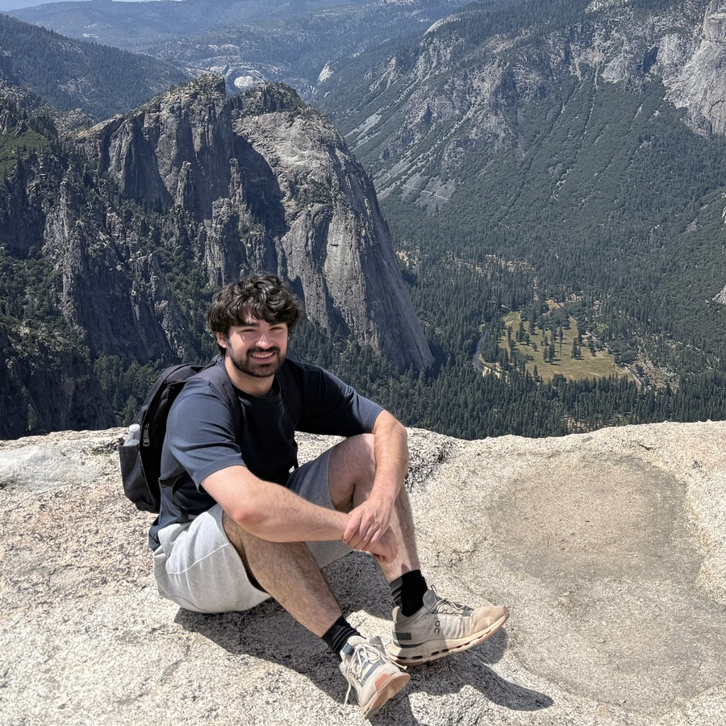

/vɑt͡ʃʰɑˈɡɑn mɛliˈkjɑn/
I'm Vach, an independent researcher. I study alignment and model welfare.
I live in Berkeley, CA, thanks to a BlueDot Career Grant.

I’m interested in personas, introspection, and evaluation awareness, with a burgeoning interest in swarm psychology.
I recently graduated from Rutgers University, where I majored in Computer Science, Cognitive Science, Linguistics, and Philosophy.
I am the founder and director of RAISE, the Rutgers AI Safety Exchange, a student organization building career pathways into AI safety.
I’ve interned as a software engineer at Twitch, working on the Twitch app for Android, and at Fidelity Investments on the Fidelity Health app for iOS.
As a fellow at the Rutgers Center for Cognitive Science, I researched the syntax–semantics interface, working with Shannon Bryant and Kristen Syrett. Earlier, at the SHIRE Lab, I developed computational approaches to identifying intersectional biases in large language models.